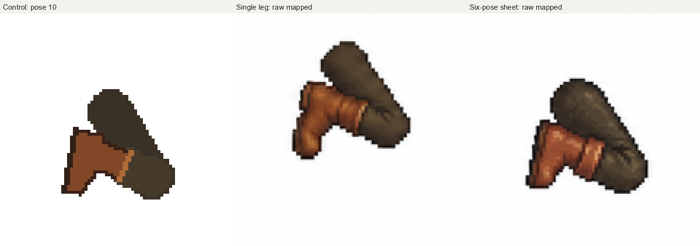
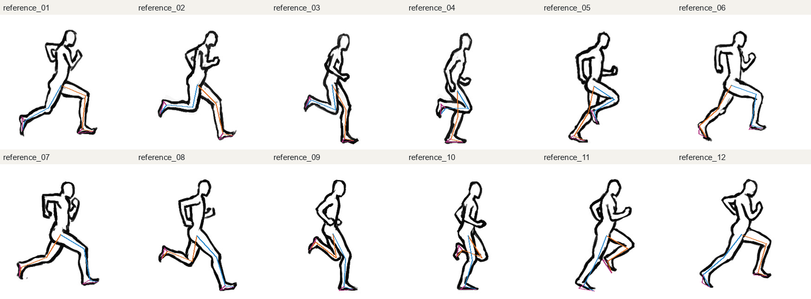
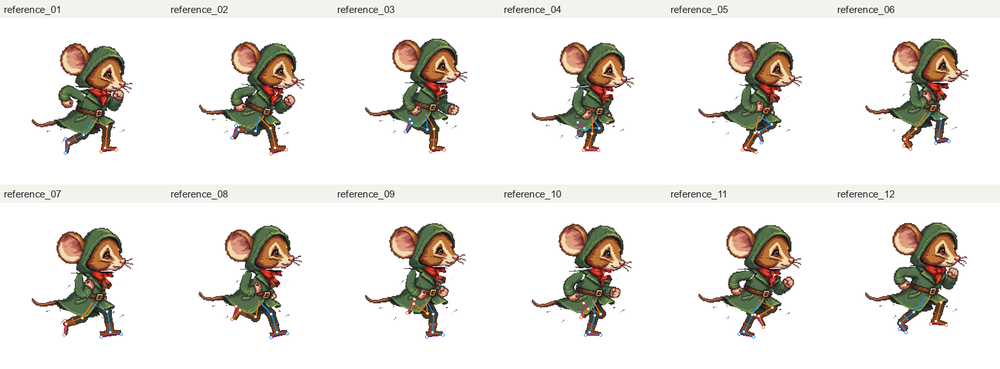
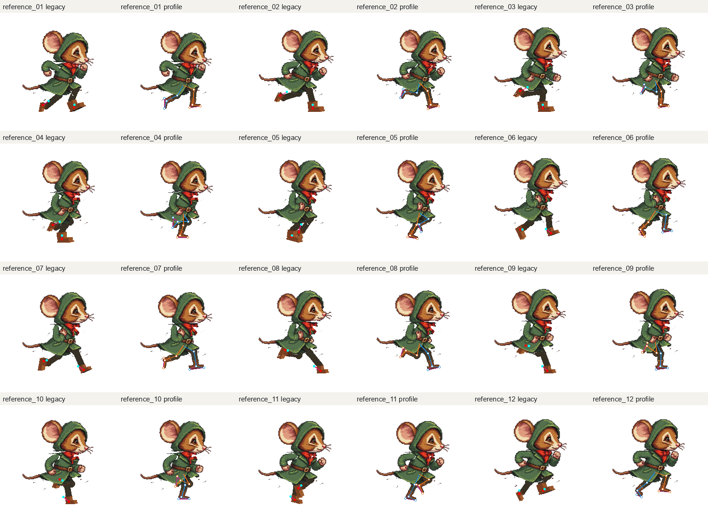
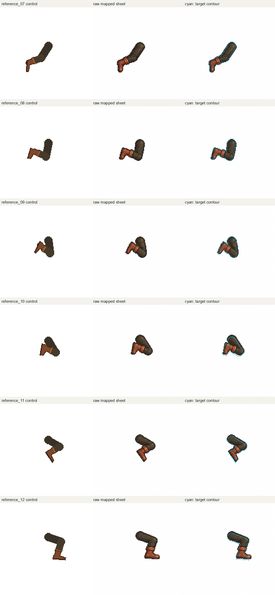

Zebes · experiment 2026-09-10
Feet attached to the pose.
Appearance shared across frames.
The old boot guide introduced a second ankle, 3–18 working pixels away from the rig. The profile prototype keeps the actual ankle and toe fixed and carries an explicit heel. Two image-generation requests compare one recovery leg with the same leg among six consecutive poses.
24 / 24ankles preserved by C++ geometry
6 poses togetherone coherent appearance sheet
Still a prototyperaw geometry and view need review
Twelve-frame motion comparison
All 24 leg poses use generated appearance in fixed world coordinates. This is a complete twelve-frame profile draft, not accepted final artwork. Estimated heels, contact calibration and the all-profile camera remain provisional. Use “Legs only” to inspect the recovery foot hidden by the unchanged coat.
Existing puppet
Original rigid painted boots and existing layered body.
New profile control
Connected legs, explicit heel/sole, shin-aligned shaft.
Raw sheet appearance
Fixed registration and white removal; no silhouette clipping. Expanded sheets drift by up to 20 working pixels.
Reusable material on fixed geometry
One cloth sample and one leather sample shade all 24 C++ leg shapes. Constrained geometry; not a raw generation result.
Recovery foot: unchanged scale and cell
The single leg moved upward substantially. The sheet stayed closer but grew the silhouettes. Inspect the toe, heel and calf direction independently of the score.

| Pose / request | Silhouette IoU | Area / control | Centroid drift, working px (x,y) |
|---|
Exact inputs and source audit
Six-pose input · Single-leg input · Source appearance · Numeric binding audit · Raw output measurements
Original drawings with traced chains and estimated heels
Orange: near leg. Blue: far leg. Magenta: newly estimated heel triangle, uncertainty ±5 source pixels.

All twelve new skeleton/artwork overlays

Old guide ankle versus posed rig ankle
Red is the legacy proxy ankle; cyan is the actual rig ankle. Each old guide is followed by the new profile control.

First six generated legs, raw mapped, with target contours

Unmodified generated sheet · Unmodified generated single leg · 48px diagnostic animation · 96px artwork draft animation · Remaining 18 leg comparisons